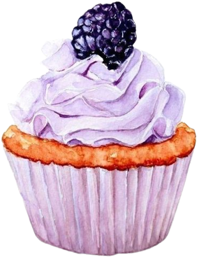
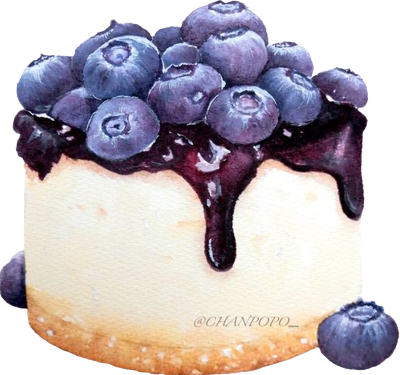
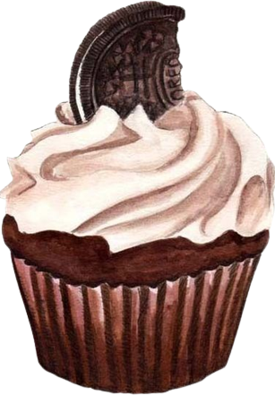
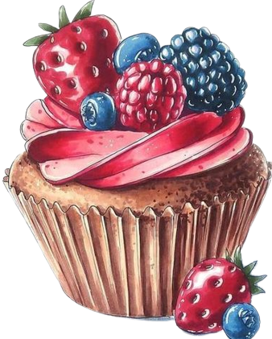
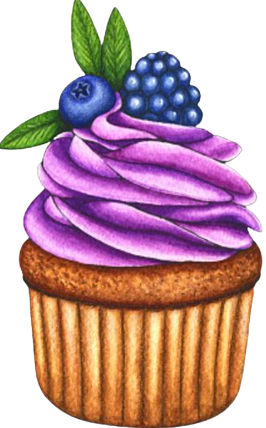
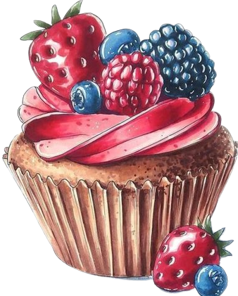
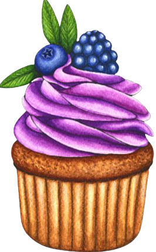
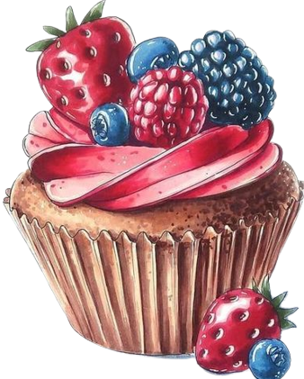
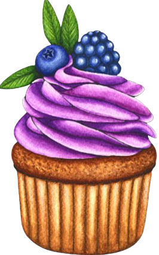

 





Porqué amamos los postres
Los postres han sido siempre el broche de oro de una comida. Un buen postre, resaltará la satisfacción de los alimentos anteriores. En muchos casos se planean como una agradable sorpresa.
Hay postres que se preparan al momento o con anticipación, con el fin de agradar al paladar ya que existen postres en todas las temperaturas y texturas (al tiempo, calientes, fríos, helados y mixtos).
La cocina puede que sea tu lugar feliz, y que mejor que un postre para cerrar los platos fuertes. ¡Quédate y descubre las mejores recetas!